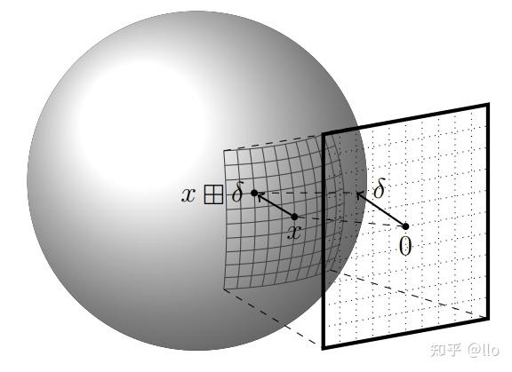

# 误差状态卡尔曼滤波 (Error-State Kalman Filter)
# 0、WTF is Manifold
在我们前面学习的两种卡尔曼滤波中，都很自然地做了一件事：把状态量相加。
无论是 KF 里的 x^k∣k=x^k∣k−1+Kky~k，还是 EKF 里完全相同的更新公式，"+" 这个操作都被当作理所当然的事情。
可是，"相加" 这件事，并不是对任何量都有意义的。
# 一个让加法失效的例子
假设你要追踪一艘船在地球上的位置 —— 用经纬度 (λ,ϕ) 来表示。
某一时刻，传感器告诉你船在东经 179°，然后你的模型预测船 "往东走了 3°"。
用加法：179°+3°=182°？
东经 182° 不存在。船越过了 180 度经线，现在的经度是西经 178 度。
这个例子隐约告诉了我们，有些变量并不处于一个线性空间里
# 旋转的表示困境
现在，假设我们要用 EKF 跟踪一架无人机的三维姿态（orientation），也就是它的旋转状态。
三维旋转实际上有 3 个自由度（比如绕 x、y、z 轴各转多少），但想把它放进 EKF 的状态向量里，我们需要一种具体的参数化表示。常见的选择有三种：
方案一：欧拉角 (α,β,γ)
三个数，和自由度完美匹配，看起来很好。
坏处：存在万向锁（Gimbal Lock）—— 当两个旋转轴重合时，会有一个自由度突然消失，导致奇异性。状态方程在这些点处不可微，EKF 在附近会崩溃。
方案二：旋转矩阵 R∈R3×3
用一个 3×3 的矩阵来表示旋转。好处是没有奇异性。
坏处：有 9 个参数，但只有 3 个自由度。这 9 个参数不是独立的，必须满足 RTR=I，det(R)=1 的约束。把它直接塞进 KF，加法会破坏这些约束 —— 两个旋转矩阵相加，结果一般不再是旋转矩阵。
方案三：单位四元数 q，∥q∥=1
4 个参数，1 个约束，3 个自由度。比旋转矩阵紧凑，也没有万向锁。
坏处：同样的旋转有两个表示（q 和 −q 表示同一个旋转），而且单位范数约束在加法下同样不被保持。
所有表示方案都面临同一个核心矛盾：
旋转空间SO(3) 本质上在一个弯曲的空间里，而 KF/EKF 的更新步骤理所当然地用了加法，默认状态住在平坦的欧氏空间 Rn 里。在弯曲的空间上，你不能直接做加法。旋转矩阵 A 加上旋转矩阵 B，结果根本就不是个旋转矩阵。
# 什么是流形（Manifold）
流形是一种空间。它的特点是：整体可以是弯曲的，但局部看起来像平坦的欧氏空间。
几个具体的例子：
-
地球表面是一个二维流形（S2）。你站在任何一个地方，脚下都像是平的，你的位置也可以只用两个参数来描述 —— 但整体是个球面，它在三维空间里。
-
圆是一个一维流形（S1）。角度 θ 在局部可以当普通实数用，但 0° 和 360° 是同一个点，全局不是直线。
-
三维旋转的集合是一个三维流形，记作 SO(3)（Special Orthogonal Group）。每一个三维旋转都是这个集合里的一个点，但它们不能用普通的向量加法来操作。
流形上的点之间，没有天然的 "加法"。
就像你没法直接把两个旋转 "相加" 得到另一个旋转 —— 你只能把它们 "复合"（先转一下再转一下）。
# 切空间
流形整体是弯的，但在某一点附近的局部，它和一个平坦的欧氏空间非常接近。这个局部的平坦空间，叫做该点处的切空间（Tangent Space）。
想象你站在地球表面某一点，往脚下铺一张无限大的纸，让这张纸和地面相切。这张纸就是该点处的切空间 —— 它是平的，在你脚下附近，纸和地面几乎重合。
但你若沿着纸走得太远，就会越来越偏离真正的球面。
对于旋转来说：
- SO(3) 本身是弯曲的流形。
- 在某个旋转 R 附近，我们可以用一个三维向量 δϕ∈R3 来表示微小的旋转扰动，这个 R3 就是 SO(3) 在 R 处的切空间，也叫李代数 so(3)。
- 加法在切空间里是完全合法的：δϕ1+δϕ2 还是一个三维向量。
虽然旋转本身不能相加，但旋转的微小误差可以用切空间里的向量来表示，而这个向量可以相加。

# ESKF 的核心思路
既然旋转不能放进 KF 的加法框架，ESKF 的做法是：把状态量一分为二。
- 名义状态（Nominal State） x：真正处在流形上，例如 R∈SO(3)。它跟踪最好的当前估计，用物理模型向前传播，但不做 KF 修正。
- 误差状态（Error State） δx：真实状态和名义状态的微小偏差，"住" 在切空间里，是个普通的欧氏空间向量，可以做加法，可以放进 KF。
整个 ESKF 的滤波器，估计的是误差状态 δx，而不是名义状态 x 本身。每次 KF 更新完后，再把修正量从切空间 "注入" 回流形，更新名义状态。
xtrue=x⊕δx
其中 ⊕ 是流形上的 "广义加法"（对旋转来说，就是用指数映射把切空间的向量转回旋转矩阵，再做矩阵乘法）。
注意这两个广义加减法并不满足交换律和结合率。
ESKF 的哲学：名义状态在流形上跑，误差状态在切空间里做卡尔曼。
# 1、系统建模
# 运行场景
为了让推导看起来更加好理解，我们选一个最经典的 ESKF 应用场景：IMU 惯性导航。
一台 IMU（惯性测量单元）包含三轴加速度计和三轴陀螺仪，能够高频输出加速度 a~ 和角速度 ω~。我们要用这两路信号来持续估计载体的位置、速度和姿态。
这个场景的特点是：运动方程一定含有旋转矩阵（要把 IMU 的 "Body 坐标系" 下的加速度转到 "World 坐标系" 下积分），所以天然是非线性的，也天然需要 SO(3) 上的操作。
等一下 ——IMU 不是传感器吗，怎么变成运动模型了？
这是一个很重要的区分。在卡尔曼滤波的框架里，"传感器" 特指那个给你独立外部观测 zk 的东西 —— 它和系统状态之间有独立的噪声，用来把协方差 P 压下来。而在此处， IMU 扮演的是控制输入 uk 的角色：它驱动状态向前演化，是运动模型的输入，而不是对状态的外部观测。
对照 KF 的小车例子：油门控制加速度 a（= uk），GPS 给出位置（= zk）。ESKF 完全对应：IMU 给出加速度和角速度（= uk），GPS 给出位置（= zk）。结构一模一样 —— 从来都是 "一个运动模型 + 一个外部传感器"，只不过这里的 "运动模型输入" 是 IMU，而不是人为施加的控制量。
|
KF 小车 |
ESKF 导航 |
| 控制输入 uk |
油门 / 加速度指令 |
IMU 读数 (a~,ω~) |
| 外部传感器 zk |
GPS 位置 |
GPS 位置 |
# 状态分解：名义状态与误差状态
按照第 0 节中提到的，我们把真实状态 xtrue 分解为：
xtrue=x⊕δx
名义状态 x 选取：
x=⎝⎜⎜⎜⎜⎜⎛pvRbabg⎠⎟⎟⎟⎟⎟⎞
| 符号 |
含义 |
所在空间 |
| p∈R3 |
位置（世界系） |
R3 |
| v∈R3 |
速度（世界系） |
R3 |
| R∈SO(3) |
姿态（旋转矩阵） |
流形 SO(3) |
| ba∈R3 |
加速度计偏置 |
R3 |
| bg∈R3 |
陀螺仪偏置 |
R3 |
误差状态 δx 定义为各分量的局部误差：
δx=⎝⎜⎜⎜⎜⎜⎛δpδvδϕδbaδbg⎠⎟⎟⎟⎟⎟⎞
其中 δϕ∈R3 是旋转误差在切空间（李代数 so(3)）里的表示。每个分量与名义状态的关系为：
ptrue=p+δp
vtrue=v+δv
Rtrue=R⋅Exp(δϕ)
ba,true=ba+δba,bg,true=bg+δbg
其中 Exp(δϕ) 是将李代数向量映射回 SO(3) 的指数映射：
Exp(δϕ)≜e[δϕ]×≈I+[δϕ]×(∥δϕ∥≪1)
[⋅]× 表示将向量转换为其对应的反对称矩阵。
除了旋转那一行，其余四行都是普通的向量加法。只有 R 是用 "右乘指数映射" 来复合的，体现了 SO(3) 上的操作。
# 名义状态动力学
名义状态用 IMU 的原始读数向前积分，不包含噪声：
pk=pk−1+vk−1Δt+21(Rk−1a~k−1+g)Δt2
vk=vk−1+(Rk−1a~k−1+g)Δt
Rk=Rk−1⋅Exp(ω~k−1Δt)
ba,k=ba,k−1,bg,k=bg,k−1
其中：
- a~=atrue+ba+na 是加速度计的原始读数（含偏置和噪声）
- ω~=ωtrue+bg+ng 是陀螺仪的原始读数（含偏置和噪声）
- g 是重力向量（世界系）
- 我们用名义状态中的 ba、bg 来补偿，即实际使用 a~−ba 和 ω~−bg 来积分
偏置建模为随机游走，所以名义状态中直接写 bk=bk−1。实际上偏置是缓慢漂移的，这个漂移会被噪声项 Qk 覆盖，并最终由 KF 更新来修正。
简写成函数形式：
xk=f(xk−1,u~k−1)
这里 u~=(a~,ω~) 是 IMU 的输出。这个方程和 EKF 的状态转移方程形式完全一致，只是 R 的更新用了 SO(3) 上的操作。
# 误差状态动力学
接下来是关键：误差状态如何传播？
思路和 EKF 的泰勒展开完全一样 —— 对名义转移函数 f 在当前名义状态处线性化，但这次我们对误差求导，而不是对完整状态求导。
设真实状态 xtrue,k=f(xtrue,k−1,u~k−1)−wk−1（这里 −w 是因为噪声从真实读数里减去），展开并减去名义状态 xk=f(xk−1,u~k−1)，保留一阶项，得到误差状态的线性传播：
δxk≈Fk−1δxk−1+Gk−1nk−1
其中：
- Fk−1 是误差状态雅可比矩阵（在名义状态处求值），具体展开后是一个 15×15 的分块矩阵（5 个状态量各 3 维）
- Gk−1 是噪声雅可比矩阵
- nk−1=(na,ng,0,0,0)T 是 IMU 的测量噪声
以旋转误差 δϕ 的传播为例，展开后得到：
δϕk≈RΔδϕk−1−ng,k−1Δt
其中 RΔ=Exp(ω~Δt) 是本步的姿态增量。其余分量（δp、δv、δb）的推导类似，这里不逐一展开。
注意：这里的线性化是对误差状态做的，而误差状态始终很小（只要滤波器没发散）。因此这个线性化的精度通常优于直接对完整状态做 EKF。这是 ESKF 比 EKF 在旋转问题上更稳定的核心原因之一。
误差状态的协方差传播，和 KF/EKF 完全一致：
Pk∣k−1=Fk−1Pk−1∣k−1Fk−1T+Gk−1QGk−1T
其中 Q 是 IMU 噪声协方差矩阵。
| 组件 |
作用 |
空间 |
| 名义状态 \mathbf |
用物理模型积分，跑在流形上 |
含 SO(3) 的混合空间 |
| 误差状态 \delta\mathbf |
被 KF 估计，总是很小 |
欧氏空间 \mathbb{R}^ |
| 误差状态传播 F |
名义状态处的线性化雅可比 |
矩阵，每步重算 |
下一步，我们来处理观测更新 —— 当 GPS 或其他传感器送来测量值时，如何用它来修正误差状态，再把修正 "注入" 回名义状态。
# 2、观测更新与状态注入
# 观测模型
假设某个时刻，GPS 给了我们一个位置测量值 zk∈R3，它和真实位置的关系是：
zk=ptrue+vk=p+δp+vk
其中 vk∼N(0,Rk) 是 GPS 的测量噪声。
注意，这个测量值 zk 是对真实状态的观测。而我们在 KF 里估计的是误差状态 δx。我们需要把观测方程改写成关于误差状态的形式。
定义残差（innovation）：
y~k=zk−h(xk∣k−1)
其中 h(x) 是用名义状态计算出的预测观测值。对于 GPS 测位置，h(x)=p，所以：
y~k=zk−pk∣k−1=δp+vk
这个残差 "包含" 了位置误差 δp 和噪声 vk。可以把它写成：
y~k=Hkδxk∣k−1+vk
其中观测雅可比 Hk 是 h 对误差状态 δx 的偏导。对于 GPS 测位置的例子，Hk=(I3×30000)（只选取 δp 分量）。
EKF 中 Hk 是观测函数对完整状态 x 的雅可比；ESKF 中 Hk 是对误差状态 δx 的雅可比。
# 对误差状态做卡尔曼更新
有了误差状态的观测模型，接下来就是完全标准的卡尔曼更新 —— 和 KF 一字不差：
计算新息协方差：
Sk=HkPk∣k−1HkT+Rk
计算卡尔曼增益：
Kk=Pk∣k−1HkTSk−1
更新误差状态估计：
δx^k∣k=δx^k∣k−1+Kky~k
更新误差状态协方差：
Pk∣k=(I−KkHk)Pk∣k−1(I−KkHk)T+KkRkKkT
等一下 —— 误差状态的先验估计 δx^k∣k−1 是什么？
因为上一时刻做完注入（见下一节）之后，误差状态会被重置为零。所以在预测步开始时，δx^k∣k−1=0，协方差 Pk∣k−1 则按第 1 节的公式传播。这样，更新公式就简化为：
δx^k∣k=Kky~k
增益直接乘残差，没有先验均值项。
# 注入：把误差修正量 "打回" 名义状态
KF 算出了误差状态的估计 δx^k∣k，这是当前名义状态和真实状态之间的偏差。现在用它来修正名义状态：
p←p+δp^
v←v+δv^
R←R⋅Exp(δϕ^)
ba←ba+δb^a,bg←bg+δb^g
前四行都是普通向量加法，第三行是 SO(3) 上的右乘复合。这就是 ⊕ 操作的具体展开。
旋转那一行 R←R⋅Exp(δϕ^) 为什么是右乘？
这取决于误差的定义方式 —— 我们在第 1 节中定义的是右扰动（right perturbation）：Rtrue=R⋅Exp(δϕ)，所以注入时自然是右乘。左右扰动的选择是一个约定，两者可以相互转化，但在一篇推导中必须统一。
# 重置：归零误差状态
注入完成后，名义状态已经吸收了误差修正量，真实状态被名义状态更好地近似了。此时，误差状态理论上应该接近零，我们直接将其重置为零：
δx^←0
协方差则保持 Pk∣k 不变（它描述的是重置后残余误差的不确定性，注入操作不改变不确定性大小，只改变均值）。
这一步是 ESKF 区别于普通 EKF 的最后一块拼图。
名义状态被修正 → 误差状态归零 → 下一步 IMU 积分重新开始积累误差 → 下一次观测再修正。
周而复始，这就是 ESKF 的完整节拍。
# 3、完整迭代流程汇总
每隔一个时间步，重复以下流程：
① IMU 传播（高频，每收到一帧 IMU 数据执行）
p←p+vΔt+21(Ra+g)Δt2
v←v+(Ra+g)Δt
R←R⋅Exp(ωΔt)
ba←ba,bg←bg
P←FPFT+GQGT
（其中 a=a~−ba，ω=ω~−bg）
② 观测更新（低频，每收到一帧外部传感器数据执行）
y~=z−h(x)
K=PHT(HPHT+R)−1
δx^=Ky~
P←(I−KH)P(I−KH)T+KRKT
③ 注入与重置
x←x⊕δx^
δx^←0
步骤 ① 可以运行在 200Hz，步骤 ② 可以运行在 10Hz—— 这种 "高频预测 + 低频修正" 的结构是 ESKF 在实际工程中极其常用的原因：IMU 廉价且快，GPS / 相机 / 激光雷达等传感器慢且精。ESKF 天然地把两者的优势结合在一起。
# ?、参考文献
知乎问答 - 如何理解「李群、李代数的初衷就是求解微分方程」？
知乎专栏 - 简明 ESKF 推导
知乎专栏 - 简单易懂 (?) 的误差状态卡尔曼滤波器 (Error State Kalman Filter, ESKF) 的原理与实现（一）原理简介